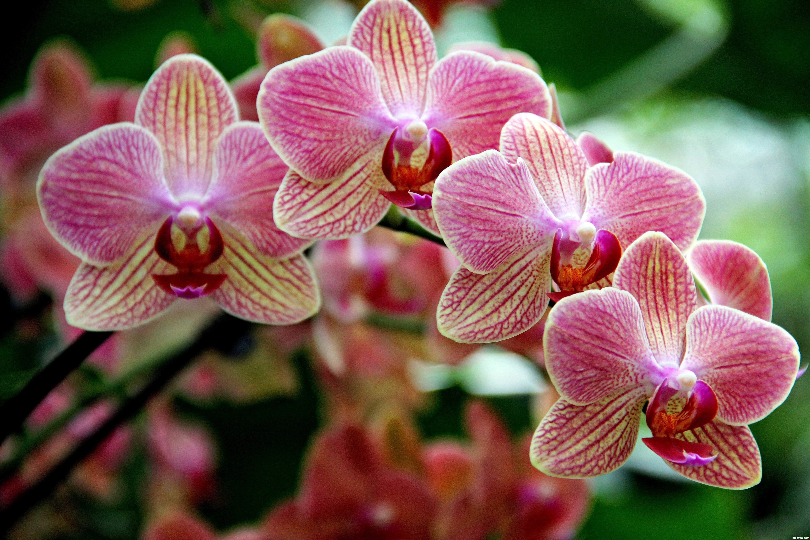
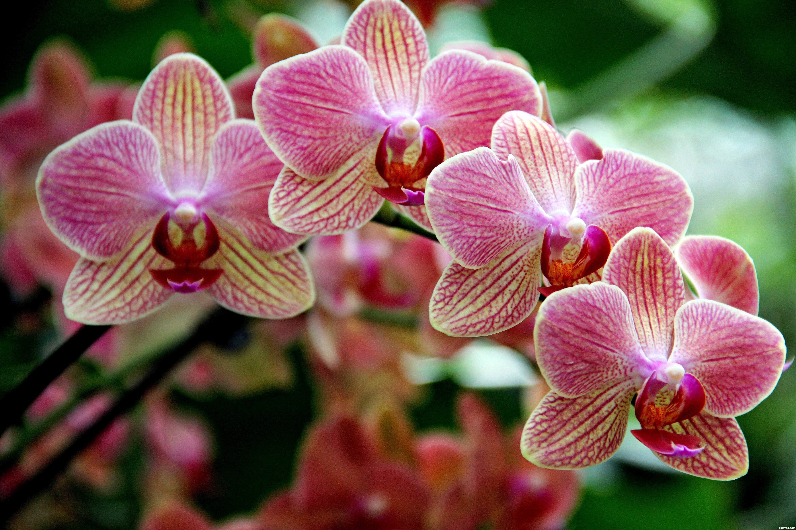

New York City Gardens
 

 Click on a plant to learn more!
Click on a plant to learn more!
- Learn
- Explore the diversity of plants, improve your gardening skills, and learn about sustainability in a peaceful, educational setting
- Conservation
- Support efforts to protect endangered species and ecosystems while enjoying nature's beauty and tranquility
| Admission - Ticket Prices |
| Garden |
Child (0-2) |
Child (3-12) |
Adult (13 & Over) |
Senior (65 & Over) |
| New York Botanical Garden |
Free |
$15.00 |
$35.00 |
$31.00 |
| Brooklyn Botanic Garden |
Free |
Free |
$22.00 |
$16.00 |
| Queens Botanical Garden |
Free |
$2.00 |
$6.00 |
$4.00 |
Hours of Operation
- Mon-Sun: 10AM-6PM
- Holidays: Closed on certain holidays
Directions
New York Botanical Garden
2900 Southern Blvd, Bronx, NY 10458
Brooklyn Botanic Garden
990 Washington Ave, Brooklyn, NY 11225
Queens Botanical Garden
43-50 Main St, Flushing, NY 11355